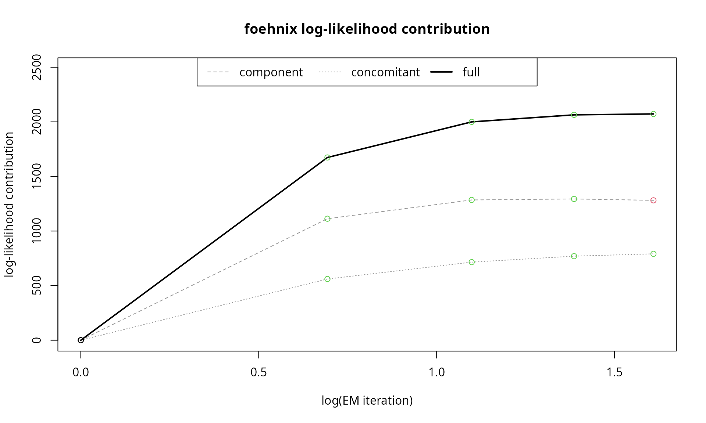
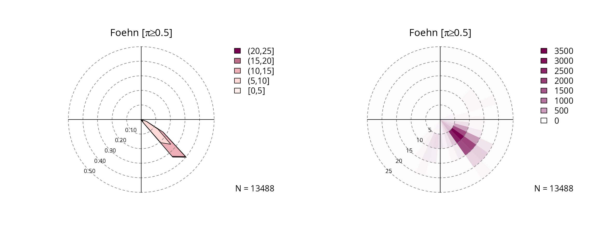
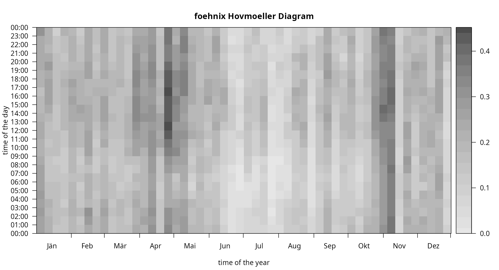

vignettes/foehnix.Rmd
foehnix.RmdFoehnix Demo
This page shows a real world demo of the automated foehn classification method foehnix based on meteorological observations from two sites in Tyrol, Austria. One station is located in the Brenner valley south of Innsbruck on 1080 meters above mean sea level, the second station is located close to the main alpine ridge on 2107 meters above mean sea level.
## dd ff rh t
## 2006-01-01 01:00:00 171 0.6 90 -0.4
## 2006-01-01 02:00:00 268 0.3 100 -1.8
## 2006-01-01 03:00:00 115 5.2 79 0.9
## 2006-01-01 04:00:00 152 2.1 88 -0.6
## 2006-01-01 05:00:00 319 0.7 100 -2.6
## 2006-01-01 06:00:00 36 0.1 99 -1.7## dd ff rh t
## 2006-01-01 01:00:00 180 10.8 100 -7.8
## 2006-01-01 02:00:00 186 12.5 100 -8.0
## 2006-01-01 03:00:00 181 11.3 100 -7.4
## 2006-01-01 04:00:00 178 13.3 100 -7.5
## 2006-01-01 05:00:00 176 13.1 100 -7.1
## 2006-01-01 06:00:00 184 10.0 100 -6.9This example shows how to perform foehn classification for Ellbögen using the information of the Sattelberg station as additional source of information. The Sattelberg station is located south of Ellbögen close to the alpine crest and thus, during foehn events, measuring the upstream air mass descending down on the north side of the Alps.
South Foehn Classification for Ellbögen
To perform the classification we first of all have to prepare our
data sets. foehnix(...) expects the input to be of class
zoo (zoo time series object; based on the zoo
package). The data sets included in this package
(ellboegen, sattelberg, …; see demodata) are already
zoo objects. Thus, we only have to load the meteorological observations
for Ellbögen (valley station) and Sattelberg (crest station):
# Load demo data sets (zoo time series objects)
data("ellboegen", package = "foehnix")
data("sattelberg", package = "foehnix")As we want to use information from both stations: rename the
variables of the sattelberg object and combine the two data
sets into one zoo object called data.
# Modify sattelberg variable names (crest_ identifies Sattelberg
# observations, our crest station) and combine both data sets.
names(sattelberg) <- paste0("crest_", names(sattelberg))
data <- merge(ellboegen, sattelberg)
# NOTE: for demonstration purpose we split the data set into
# two pieces: a training and a test data set.
# The training data set is used to estimate the mixture model, the
# test data set will be used for "predictions" (see "Predictions"
# section of this file).
train <- head(data, nrow(data) - 10)
test <- tail(data, 10)
rm(data) # Delete 'data'In addition we are calculating the potential temperature difference between the two sites using a dry adiabatic lapse rate of one 10 degrees Celsius per 1000 meters. The difference in altitude between the two stations is 1027 meters which yields:
# Dry adiabatic temperature difference between
# Sattelberg (data$crest_t) and Ellboegen (data$t) corrected by
# 1027/10 degrees.
train$diff_t <- train$crest_t + 10.27 - train$tSouth foehn flow at the valley station in Ellbögen has a wind direction of
about 133 degrees. We are using a (relatively weak) wind direction
filter with a wind sector of +/-90 degrees around 133 degrees. For the
classification only observations/times are used where the corresponding
wind direction (dd) lies within the wind sector
>=43 and <= 223 (180 degrees sector). In
addition we can make use of the information provided by the crest
station (Sattelberg) in several
ways:
- We use the temperature difference between the two stations as main
variable for the classification (
diff_t). - define wind sector filter at the target station (Ellbögen). Only use observations
with a wind direction (
dd) inside the wind sector of>=43and<=223degrees for classification (dd = c(43, 223)). - specify a second filter such that only observations are used for
classification where the crest station shows a southerly flow (wind
direction within
>= 90and<= 270,sat_dd = c(90, 270)).
Check the Model
A set of S3 methods for object of class foehnix are
available, This includes methods to access information criteria, methods
to check the estimated model (model settings), methods to return the
estimated coefficients and probabilities, and some default plots for
model assessment.
Let’s check our demo model mod estimated above:
# Information criteria
# logLik: final log-likelihood sum of the model
# edf: effective degrees of freedom
# AIC: Akaike information criterion
# BIC: Bayesian information criterion
c(logLik(mod), edf(mod), AIC(mod), BIC(mod))## loglik edf AIC BIC
## -55763.83 6.00 111539.67 111588.29The print and summary methods show some
information about the model such as number of observations used for the
classification, the filter and its effect, and the corresponding
information criteria.
print(mod)##
## Call: foehnix(formula = diff_t ~ ff, data = train, switch = TRUE, filter = filter,
## verbose = FALSE)
##
## Number of observations (total) 113942 (5527 due to inflation)
## Removed due to missing values 38700 (34.0 percent)
## Outside defined wind sector 50793 (44.6 percent)
## Used for classification 24449 (21.5 percent)
##
## Climatological foehn occurance 17.93 percent (on n = 75242)
## Mean foehn probability 17.69 percent (on n = 75242)
##
## Log-likelihood: -55763.8, 6 effective degrees of freedom
## Corresponding AIC = 111539.7, BIC = 111588.3
## Time required for model estimation: 2.7 seconds
##
## Use summary(object, detailed = TRUE) to get additional test statistics.The coef or coefficients method returns the
estimated coefficients.
coef(mod)## Coefficients of foehnix model
## Model formula: diff_t ~ ff
## foehnix family of class: Gaussian
##
## Coefficients
## mu1 sigma1 mu2 sigma2 (Intercept) ff
## 5.6735162 2.7399700 0.8667821 1.3340624 -5.7422844 1.0656787## mu1
## 5.673516
print(c["mu2"])## mu2
## 0.8667821The summary method allows to get the test statistics for
the estimated coefficients, namely the z statistics for the concomitant
model (if any) and the t statistics for the two location parameters of
the two components.
summary(mod, detailed = TRUE)##
## Call: foehnix(formula = diff_t ~ ff, data = train, switch = TRUE, filter = filter,
## verbose = FALSE)
##
## Number of observations (total) 113942 (5527 due to inflation)
## Removed due to missing values 38700 (34.0 percent)
## Outside defined wind sector 50793 (44.6 percent)
## Used for classification 24449 (21.5 percent)
##
## Climatological foehn occurance 17.93 percent (on n = 75242)
## Mean foehn probability 17.69 percent (on n = 75242)
##
## Log-likelihood: -55763.8, 6 effective degrees of freedom
## Corresponding AIC = 111539.7, BIC = 111588.3
## Time required for model estimation: 2.7 seconds
##
## Cluster separation (ratios close to 1 indicate
## well separated clusters):
## prior size post>0 ratio
## Component 1 (foehn) 0.55 13488 19658 0.69
## Component 2 (no foehn) 0.45 10961 22457 0.49
##
## ---------------------------------
##
## Concomitant model: z test of coefficients
## Estimate Std. error z value Pr(>|z|)
## cc.(Intercept) 0.912295 0.075737 12.046 < 2.2e-16 ***
## cc.ff 3.996336 0.013613 293.567 < 2.2e-16 ***
## ---
## Signif. codes: 0 '***' 0.001 '**' 0.01 '*' 0.05 '.' 0.1 ' ' 1
## Number of IWLS iterations: 2 (algorithm converged)
## Dispersion parameter for binomial family taken to be 1.The method plot provides a set of model assessment
plots. Different types are available, if no which argument
is set all will be shown one after another.
which = "loglik" shows the log-likelihood path of the
two components of the model (the part for the two components of the
mixture model plus the one of the concomitant model) plus the full
likelihood path. The x-axis shows the log-iterations of the EM algorithm
(see statistical models for more
details). Increasing values indicate positive log-likelihood
contributions (improvement of the model).
plot(mod, which = "loglik", log = F)
which = "loglikcontribution" shows the same information
as which = "loglik" but with respect to the log-likelihood
of the initial parameters. Increasing values indicate positive
log-likelihood contributions (improvement of the model).
plot(mod, which = "loglikcontribution")
Similar to the plots above we can also check the paths of the
coefficients trough the iterations of the EM algorithm with
which = "coef":
plot(mod, which = "coef")Last but not least the which = "hist" plot shows the
conditional histograms of the two clusters. Two histograms are shown
given the main covariate of the foehnix mixture model, in
this case (model mod) it is delta_t, the
potential temperature difference between the valley station Ellbögen and the crest station Sattelberg. The left panel
corresponds to the “no foehn” component or cluster, the right one to the
“foehn” component. If a filter rule is used: only the data
which have been used for classification will be shown. Observations with
a higher probability to be in the left component are sown left,
observations with a higher probability to be a member of the second
component are shown right. On top (line) the estimated density of the
two components is shown.
plot(mod, which = "hist")
Fitted probabilities (the probabilities obtained by the model based
on the training data set) can be accessed by calling
fitted:
## [1] "zoo"## Index fitted(mod)
## Min. :2006-01-01 01:00:00 Min. :0.00
## 1st Qu.:2009-04-01 22:15:00 1st Qu.:0.00
## Median :2012-07-01 19:30:00 Median :0.00
## Mean :2012-07-01 19:30:00 Mean :0.18
## 3rd Qu.:2015-10-01 16:45:00 3rd Qu.:0.00
## Max. :2018-12-31 14:00:00 Max. :1.00
## NA's :38700The method let’s you access the fitted probabilities
(which = "probability"), a flag which comes with the fitted
values (which = "flag"), or both
(which = "both").
## 2018-12-31 09:00:00 2018-12-31 10:00:00 2018-12-31 11:00:00 2018-12-31 12:00:00
## NA NA NA NA
## 2018-12-31 13:00:00 2018-12-31 14:00:00
## NA NA## 2018-12-31 09:00:00 2018-12-31 10:00:00 2018-12-31 11:00:00 2018-12-31 12:00:00
## NA NA NA NA
## 2018-12-31 13:00:00 2018-12-31 14:00:00
## NA NA## prob flag
## 2018-12-31 09:00:00 NA NA
## 2018-12-31 10:00:00 NA NA
## 2018-12-31 11:00:00 NA NA
## 2018-12-31 12:00:00 NA NA
## 2018-12-31 13:00:00 NA NA
## 2018-12-31 14:00:00 NA NAExplanation of the flag: * NA if we have had missing
data (missing covariates, or missing data to apply the
filter rules provided when calling foehnix). *
0 if observations have been outside the defined
filter, not used for classification and thus the
probability has been set to 0. * 1 if
observations have been used for classification with the corresponding
estimated probability.
Conditional and Unconditional Wind Rose Plots
In addition, windrose proides a convenient function to plot wind roses.
windrose(mod, ncol = 3)
The individual plots can also be plotted separately:
windrose(mod, which = "foehn", ncol = 2)
One type shows the density function (type = "density"),
the other one a 2-D histogram (type = "histogram"). The
argument which allows to plot the unconditional windrose
(which = "unconditional"), the ‘no foehn event’ windrose
(which = "nofoehn") which shows only observations where the
classification gives a probability of foehn below 0.5, and
a wind rose for ‘foehn’ events where the classification returned a
probability of >= 0.5.
Hovmöller Diagrams
The image method applied to foehnix objects
allows to plot Hovmöller diagrams with a set of options. Some of the
features are:
- Aggregate the data along the time-of-the-day axis (y-axis) as well as along the time-of-the-hear axis (x-axis).
- Add contour lines on top of the data.
- Beside the “default” aggregation functions custom aggregation
functions can be used. Examples:
-
FUN = "mean": aggregates mean foehn probability. - `FUN = “occ”: occurrence of foehn events (events with a probability >= 0.5).
- `FUN = “noocc”: occurrence of non-foehn events (events with a probability < 0.5).
- `FUN = “freq”: frequency of foehn events.
-
FUN = function(x) sum(x > 0.8, na.rm = TRUE): an example of a custom function, in this case the occurrence of events with a probability larger than 0.8.
-
Example 1: Default plot, no aggregation on the time
axis (deltat = NULL; takes increments of the underlying
data), weekly aggregation along the time of the year axis
(deltad = 7L), the frequency (FUN = "freq") is
plotted without contours.
image(mod, FUN = "freq")
Example 2: Aggregated to three-hourly intervals
(deltat = 3600 * 3), two-week mean values
(deltad = 14L), occurrance of foehn
(FUN = "occ"), with custom colors and contours (without
labels).
col <- rev(colorspace::sequential_hcl(51, h = c(-50, 120), c. = c(80, 10)))
image(mod, FUN = "occ", col = col,
deltat = 3 * 3600, deltad = 14L,
contours = TRUE, contour.col = "white", lwd = 2, drawlabels = FALSE,
main = paste("Hovmoeller Diagram, Occurrence of Foehn",
"2-Weekly/3-Hourly Sums", sep = "\n"))
Predictions
A last important method is predict. The term predict
refers to statistical prediction, applying a statistical model to a data
set which has never been seen by the model (not included in the training
data set).
As foehnix is a statistical classification method a
prediction in this context is not a forecast (like a weather forecast),
but a classification to new data. This can, for example, be used to
retrieve foehn probabilities for new observation in an operational
context.
Assume we have estimated a foehnix mixture model and a
set of new observations from our two stations (Ellbögen and Sattelberg) have become available.
We would like to get foehn probabilities this new data set. Luckily we
put aside 10 observations earlier (the test data set):
# Calculate potential temperature difference (as we did above)
test$diff_t <- test$crest_t + 10.27 - test$t
print(test)## dd ff rh t crest_dd crest_ff crest_rh crest_t diff_t
## 2018-12-31 15:00:00 NA NA 100 0.0 NA NA 100 -3.7 6.57
## 2018-12-31 16:00:00 NA NA 100 -0.2 NA NA 100 -4.0 6.47
## 2018-12-31 17:00:00 NA NA 100 -0.6 NA NA 100 -4.1 6.77
## 2018-12-31 18:00:00 360 2.5 100 -0.3 NA NA 100 -3.9 6.67
## 2018-12-31 19:00:00 358 0.7 100 -0.1 NA NA 100 -4.3 6.07
## 2018-12-31 20:00:00 360 0.9 100 -0.7 6 14.0 100 -4.2 6.77
## 2018-12-31 21:00:00 NA NA 100 -0.6 4 11.8 100 -4.2 6.67
## 2018-12-31 22:00:00 NA NA 100 -0.3 0 12.1 100 -4.5 6.07
## 2018-12-31 23:00:00 NA NA 100 0.1 4 5.3 100 -4.8 5.37
## 2019-01-01 00:00:00 NA NA 100 0.1 NA NA NA NA NAGiven our model we can now perform the classification on this new
data set which has not been used for training the foehnix
mixture model by calling:
predict(mod, newdata = test)## prob flag
## 2018-12-31 15:00:00 NA NA
## 2018-12-31 16:00:00 NA NA
## 2018-12-31 17:00:00 NA NA
## 2018-12-31 18:00:00 NA NA
## 2018-12-31 19:00:00 NA NA
## 2018-12-31 20:00:00 0 0
## 2018-12-31 21:00:00 NA NA
## 2018-12-31 22:00:00 NA NA
## 2018-12-31 23:00:00 NA NA
## 2019-01-01 00:00:00 NA NAFor demonstration: we would have become the same (roughly the same,
as a slightly different training data set is used) if we would
re-estimate the model based on the whole data set (train
and test combined) and check the estimated probabilities of
the last 10 entries, the very same times we have put aside as our
test data set:
mod2 <- foehnix(diff_t ~ ff, data = rbind(train,test),
filter = filter, switch = TRUE, verbose = FALSE)
print(tail(fitted(mod2, 1:2), 10))## prob flag
## 2018-12-31 15:00:00 NA NA
## 2018-12-31 16:00:00 NA NA
## 2018-12-31 17:00:00 NA NA
## 2018-12-31 18:00:00 NA NA
## 2018-12-31 19:00:00 NA NA
## 2018-12-31 20:00:00 0 0
## 2018-12-31 21:00:00 NA NA
## 2018-12-31 22:00:00 NA NA
## 2018-12-31 23:00:00 NA NA
## 2019-01-01 00:00:00 NA NA